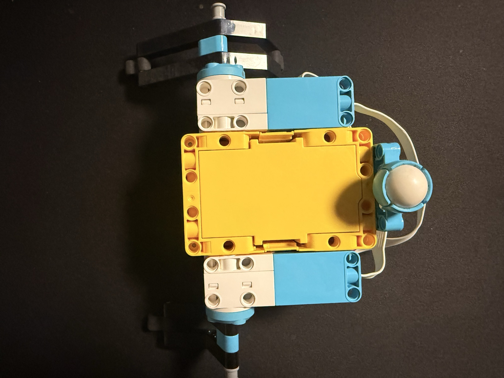
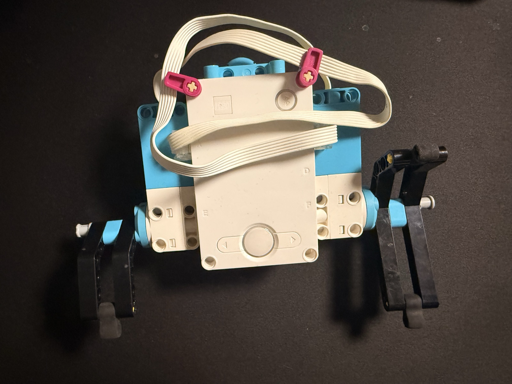

04 M — Sheet 19 / 19
Use reinforcement learning to teach a Silly Walk robot to walk straight.

The Silly Walks robot came back, and this time it learns. The challenge: use reinforcement learning to teach a silly walker with lopsided legs to walk straight. I built my first one in September, for Project 2. This one follows the course's challenge: two leg motors on a hub, and the legs are lopsided on purpose, so it curves off and has to learn its way back to straight.
The program is the course's again, written by Ziyi Zhang at the Tufts CEEO, with the same live dashboard. My part was the walker: hub, two motors, a ball caster at the back, and legs. Several sets of legs, actually, which the slide suggested trying.

The state is which way the robot is pointing compared to where it started, read from the hub's gyro and sorted into seven zones: straight, a little off to either side, more off, way off. An action is a pair of leg speeds, 0, 300 or 750 degrees per second for each leg, eight combinations. The reward is +10 for pointing straight and gets more negative the further it drifts, down to -25. Every three quarters of a second it picks a speed pair, sees which zone it lands in, and updates the table. A training episode is twenty of those, fifteen seconds, and the legs go back to their starting pose after every run so each one starts the same way.
What impressed me was how easily it learned to improve. I changed its legs, ran the same program, and it didn't struggle to relearn. Then I built legs that were really hard to walk on, and it learned those too.
The learning agent is the exact same class as in the 1D Color Search, and the course's code says so itself. What changes is the environment, which is what the excerpt below shows: how the robot measures its state, what counts as an action, and what the reward is.
# ---- Ports and motor directions ----
LEFT_MOTOR_PORT = port.B
RIGHT_MOTOR_PORT = port.A
LEFT_MOTOR_DIRECTION = 1 # change to -1 if the left leg spins the wrong way
RIGHT_MOTOR_DIRECTION = -1 # motors on opposite sides face opposite ways,
# so one of the two is usually -1
# ---- Actions: leg speeds ----
# Every combination of a left speed and a right speed is one ACTION
# (except both legs stopped): 3 speeds -> 3 x 3 - 1 = 8 actions.
LEG_SPEEDS = [0, 300, 750]
# ---- States: heading zones ----
# Zone edges in degrees away from straight. [5, 20, 40] makes 7 states:
# 0 = within 5 degrees of straight
# 1 / -1 = 5 to 20 degrees off 2 / -2 = 20 to 40 degrees off
# 3 / -3 = more than 40 degrees off
STATE_EDGES = [5, 20, 40]
# Reward for each zone: straight first, then each zone further away.
STATE_REWARDS = [10, -2, -10, -25]
# ---- Runs ----
STEP_TIME_MS = 750 # how long each action runs before the next decision
TRAIN_STEPS = 20 # steps in one training episode (20 x 0.75 s = 15 seconds)
TEST_STEPS = 40 # steps in one test run (40 x 0.75 s = 30 seconds)
GIVE_UP_ANGLE = 140 # stop the run if the robot turns more than this many degrees
# All the actions: (left speed, right speed), skipping "both legs stopped"
ACTIONS = []
for left_speed in LEG_SPEEDS:
for right_speed in LEG_SPEEDS:
if left_speed != 0 or right_speed != 0:
ACTIONS.append((left_speed, right_speed))
# All the states: -3, -2, -1, 0, 1, 2, 3 (with 3 edges)
STATES = list(range(-len(STATE_EDGES), len(STATE_EDGES) + 1))
def read_heading():
"""How far the robot has turned since the start of the run, in degrees.
(The hub reports tenths of a degree, so divide by 10.)"""
return motion_sensor.tilt_angles()[0] / 10
def heading_to_state(heading):
"""Sort a heading into a zone: 0 = straight, bigger numbers = further off."""
zone = 0
while zone < len(STATE_EDGES) and abs(heading) > STATE_EDGES[zone]:
zone += 1
if heading < 0:
return -zone
return zone
def reward_for(state):
return STATE_REWARDS[abs(state)]